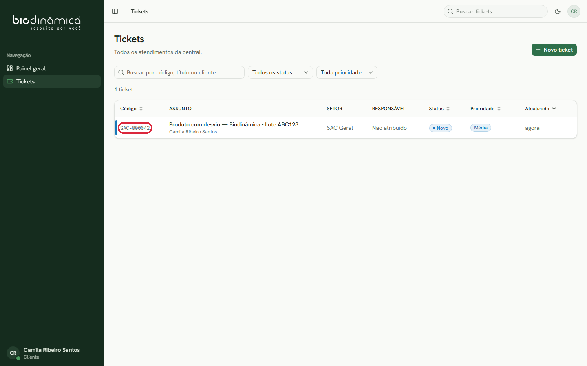
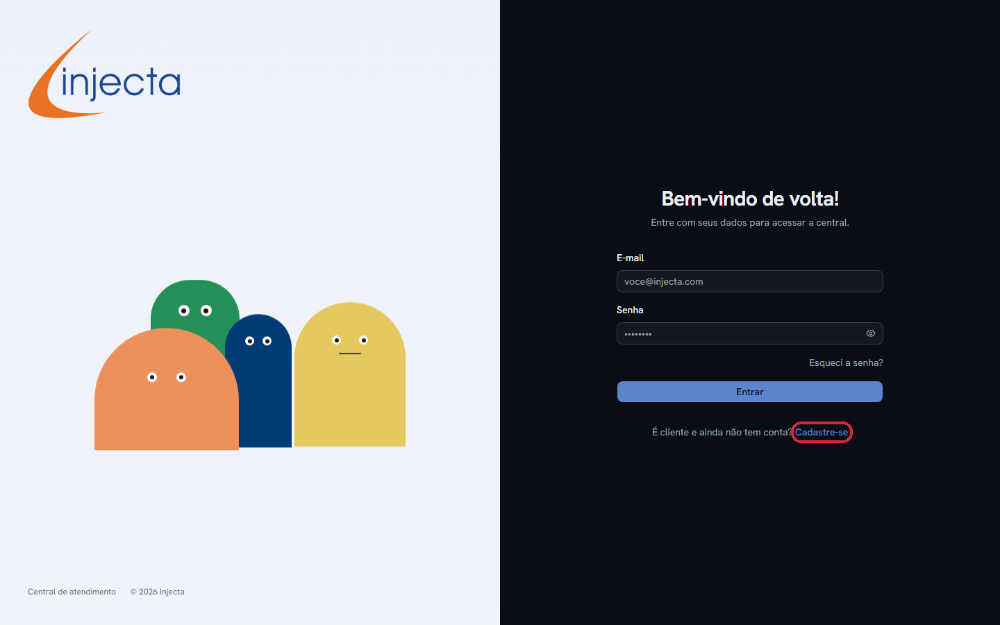
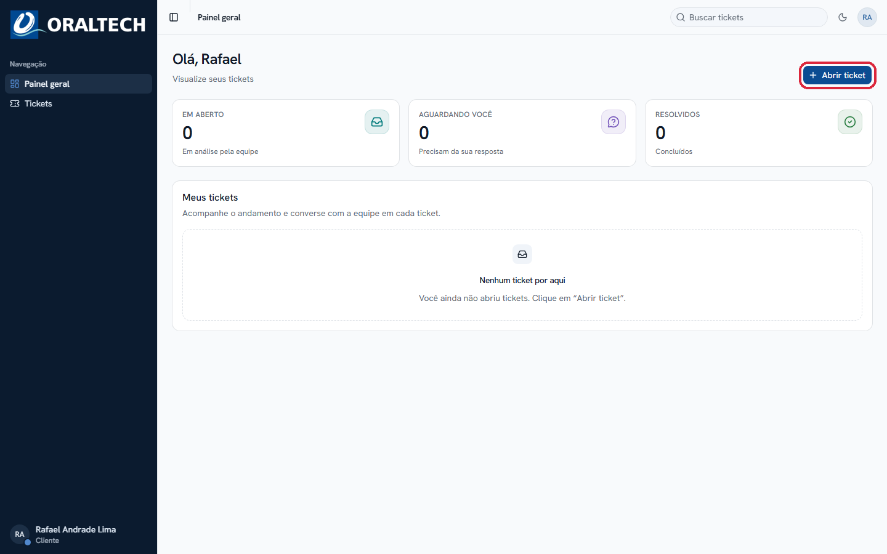
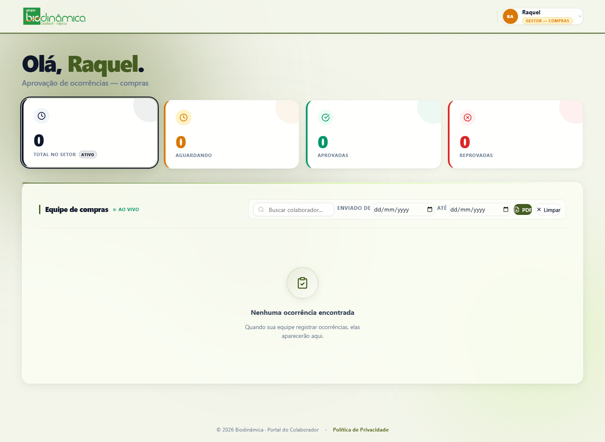
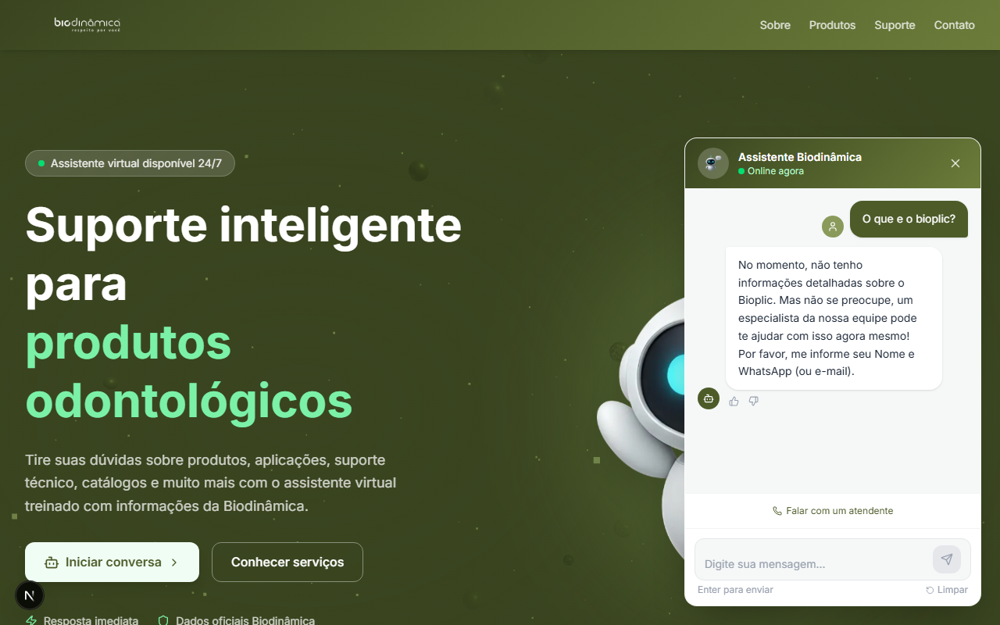
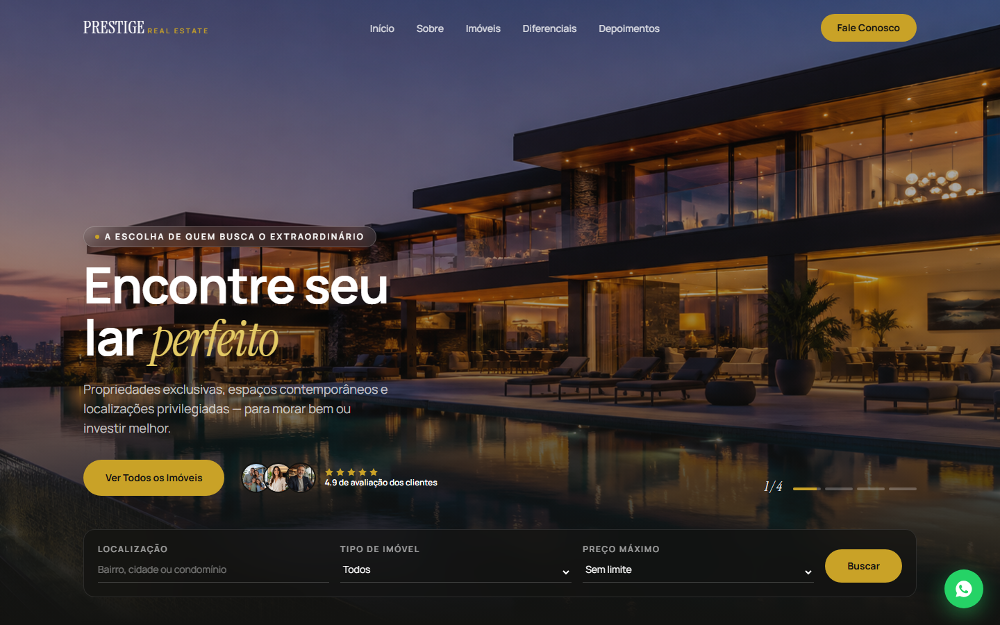

Sistemas
Portais, dashboards e ferramentas internas sob medida — controle de acesso por perfil, aprovações, relatórios automáticos. Pensados pra sua operação, não adaptados de um modelo genérico.
Sistemas · Sites · Automações
Sistemas, sites e automações que a Forja projeta e constrói — para o seu negócio rodar sozinho, todos os dias.
Nossa visão
Site bonito sem sistema por trás é vitrine vazia. Trabalhamos nichos diferentes — saúde, imobiliário, indústria, serviços — mas o padrão se repete: o negócio precisa de mais do que uma página institucional. Precisa de um motor rodando por trás dela: cadastro automático, atendimento que não depende de alguém estar online, aprovação que não trava em grupo de WhatsApp. É isso que forjamos primeiro. O site vem depois — como a porta de entrada desse motor.
O que construímos
Portais, dashboards e ferramentas internas sob medida — controle de acesso por perfil, aprovações, relatórios automáticos. Pensados pra sua operação, não adaptados de um modelo genérico.
Sites institucionais e comerciais com identidade própria, rápidos e prontos pra campanha — construídos para converter tráfego pago, não só para existir.
Atendimento com IA, respostas automáticas, fluxos que rodam 24 horas por dia — mesmo quando ninguém da equipe está de plantão.
Projetos reais, em produção
Role pra ver os quatro projetos →Arraste pra ver os quatro projetos →
Um único sistema de central de atendimento (SAC), construído uma vez e implantado para as três marcas do Grupo Biodinâmica — Biodinâmica, Injecta e Oraltech. Cada empresa com sua própria identidade visual, seus próprios setores e fila de tickets, rodando sobre a mesma base de código.



Portal interno com dashboards por perfil — colaborador, gestor, RH e administrador. Aprovação de ocorrências em tempo real, relatórios em PDF gerados automaticamente, criação em massa de acessos. O que antes rodava em planilha e e-mail agora tem fila, histórico e dono.

Chatbot institucional com IA generativa e busca semântica na base de conhecimento da empresa. Responde dúvidas de produto 24 horas por dia e escala para um atendente humano quando precisa — sem visitante nenhum esperando resposta.

Projeto autoral para o nicho imobiliário de alto padrão: hero com slider automático, contadores animados, depoimentos em marquee infinito e todo o conteúdo centralizado num único arquivo editável — para qualquer corretora assumir o site sem depender de programador para trocar um texto.

Como trabalhamos
Entendemos onde o negócio trava: processo manual, atendimento lento, site que não converte.
Desenhamos o sistema antes de desenhar a tela: estrutura de dados, papéis de acesso, fluxo de automação.
Sistema, site e automação sobem juntos, testados com dados reais do seu negócio.
Acompanhamento depois do lançamento. O sistema evolui junto com a empresa.
Pronto pra sair da planilha?
Conversa de 20 minutos, sem compromisso. Se não fizer sentido pro seu negócio, a gente fala isso também.